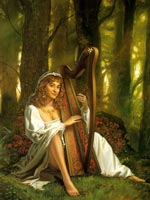

Сів або Сиф, в скандинавської міфології богиня, дружина Тора. Від першого шлюбу у неї був син Уу, бог лучників і лижників. Сів славилася своїми чудовими золотими волоссям (мабуть, символом родючості). Відомий міф про те, як Локі зрізав їй волосся, а потім на вимогу Тора змусив цвергов викувати для Сів чарівний перуку з золотих ниток, який виглядав чудово: навіть найслабший вітерець розвівав густі золоті пасма, і, крім того, волосся самі росли на голові .
Вирішивши зробити богам приємне і залишити їх у себе в боргу, карлики використовували залишився в горні жар для виготовлення складного корабля Скідбладнір для бога родючості Фрейра і чарівного списи Гунгнир для Одіна. Повертаючись з кузні в обитель богів Асгард з перукою, кораблем і списом, Локі зустрів братів-карликів Брокка і Ейтрі. Вони оцінили майстерність, з яким були виготовлені ці чудові речі.
Локі запропонував їм викувати щось краще і навіть посперечався на свою голову, що перевершити цвергов їм не вдасться. Зачеплені за живе, брати виготовили для Тора чарівний молот Мьелльнір, грозу велетнів. Страждання красуні Сів, що позбулася зі злої забаганки Локі густого волосся, ототожнювалися скандинавами із зимою, коли на полях замість золотої ниви залишається стерня.